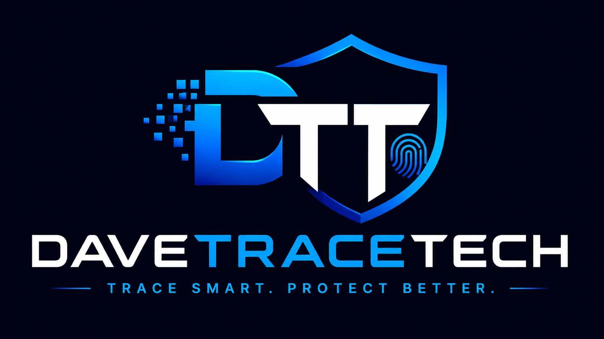

01
2023 → Present
DaveTraceTech
A cybersecurity and card-fraud prevention concept originating in 2023. The project explores suspicious transaction alerts, location context, emergency security controls, fraud-awareness support and evidence organisation.
IdeaResearchPrototypeSecurity DesignFuture App